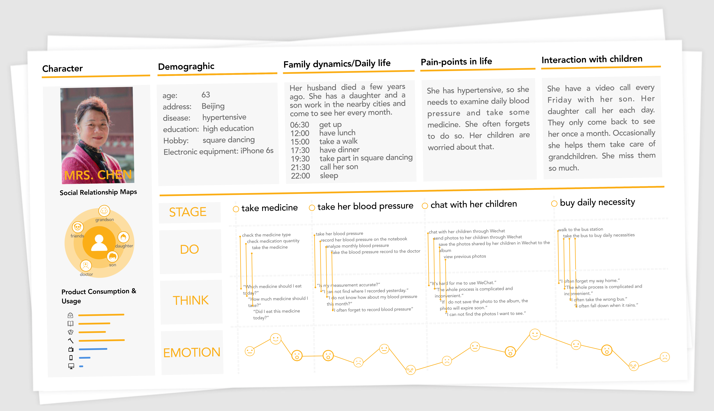
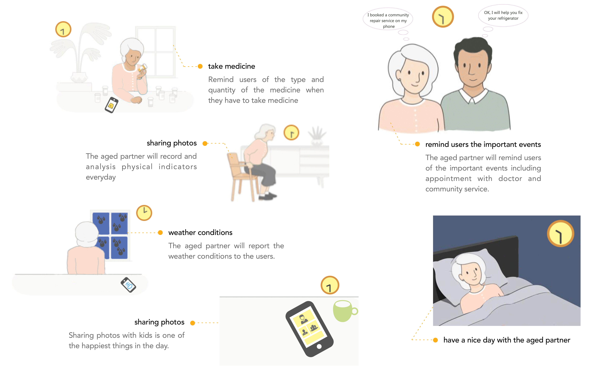

[Aged Partner] Remote Care For Elderly
User Research / UX / UI
Individual Works
Beijing
Jan. 2017 - Mar. 2017

DESCRIPTION
A recent survey conducted by the State Department shows that due to the increase in urban migrants, it is expected China's loner and empty nester will increase to about 118 million by 2020. Empty nester refers to the elderly over the age of 60 who lives far away from their children. The children work in other cities therefore can’t provide the care and help their parents need. The medical facilities and welfares for the elderly are still under construction, so empty nester will become a very serious societal issue.
This project aims to design a system that can help monitoring the elderly, remind them important things such as taking the medicine and enhance their communication with their children.

BACKGROUND
In this part, I did background research in order to get a better understanding of today’s aging society in China.

PROBLEM FINDING
In order to gain more information about the loner and empty nester, I went to the local community and hospitals, observed and interviewed and made the mindmap to find the connection between them.
1. Health Related Problems
Most of the problems they faced are health related. They are easy to get sick and most of them are suffering from chronic diseases. They have to take medicine everyday and monitoring indicators of the body everyday.
2. Easy to Forget Important Stuff
Most elderly are suffering from Alzheimer. With the decline in memory, they often forget some important things just like taking medicine.
3. Lack of Children's Companionship and Care
Many elderly people live far away from their children and rarely meet with their children. Lack of children's companionship and care makes them lonely, which in turn leads to physical and psychological problems.

AEIOU METHODS
According to the AEIOU Methods and the research result mentioned above, I find some key points of my design and listed as follows.

PERSONA

STORY BOARD

DEMAND ANALYSIS
INFORMATION ARCHITECTURE
Aged partner consists of both hardware and software. The hardware is the bracelet worn by the elderly and can monitor physical conditions, determine positions and other functions. The software is divided into two parts, one for the children and the other for the elderly. Some of the core functions used by the elderly are medication, appointment reminders, and photo sharing with their children. The core functions used by the children are monitoring the physical conditions of the elderly, helping the elderly to make doctor appointments, and photo sharing with the elderly.
WIREFRAME
USER INTERFACE DESIGN